整合共享 · 开放创新 · 支撑育种 · 服务产业
汇聚行业顶尖人才，打造高水平科研创新团队
研究方向：果树遗传育种
成果：国家科技进步二等奖
研究方向：资源评价与利用
成果：发表论文 56 篇
研究方向：分子生物学
成果：授权专利 18 项
研究方向：表型组学
成果：发表论文 32 篇
联合创新，共促农业科技成果转化应用
通过分子标记辅助选择，培育出抗寒、优质、丰产的苹果新品种。
合作单位：山东农业大学
构建猕猴桃种质资源多维度评价体系，筛选优异种质。
合作单位：中国农业科学院
为企业提供脱毒苗繁育技术支持，提升苗木质量与产量。
合作单位：某某农业科技公司
建设国家果树种质资源圈，保存资源 5000 余份。
合作单位：农业农村部
聚焦前沿研究，推动农业科技创新发展

Plant Biotechnology Journal
2024-06-01
作者：王志强 等
2024-05-15
作者：陈晓 等
2024-05-10
专利号：ZL 2024 1 0123456.7
授权时间：2024-04-28
Horticulture Research
2024-05-20
完成人：李建团 等
登记号：国品审 2024001
NY/T 标准
2024-04-15
作者：张明 等
2024-04-08